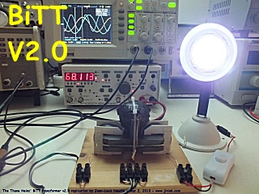

4 mars 2013 - DLE-TEST10 : Voici une test d'une version expérimentale du Transformateur Bi-Toroïde basée sur le principe du BiTT de Thane C. Heins de Potential Difference Inc. Canada. Ce transformateur possède 2 secondaires symétriques montés dans un circuit magnétique toroïdal à noyau ferrite. Un circuit magnétique primaire (à faible couplage) produit au centre un flux symétrique dans les 2 secondaires.

Voici la configuration de ce TEST-DLE10 :
Dans ce test, la lampe de charge, une ampoule LED de 4 Watts est connectée (via un interrupteur) directement sur un des 2 secondaires alors que l'autre secondaire est en court-circuit.

RESULTATS des tests du BiTT v2.0 :
On constate que le courant AC sinusoïdal alimentant le primaire à 68 Hz chute légèrement lorsque le BiTT est en charge.


Les paramètres d'entrée du primaire (Tension, Courant, Puissance, Cos(f)) sont quasiement invariants lorsque le BiTT est en charge.

Voici la vidéo des tests du BiTT v2.0
Voici une vidéo du BiTT v2.0 qui montre en détail le déphasage Tension/Courant en charge et à vide
Stay tuned,
Email: jnaudin509@aol.com
Documents et références (courtesy of Thane C. Heins CEO of PDI Canada ) :
BI TOROID TRANSFORMER vs CONVENTIONAL TRANSFORMER by Thane C. Heins
TEST SUIVANT